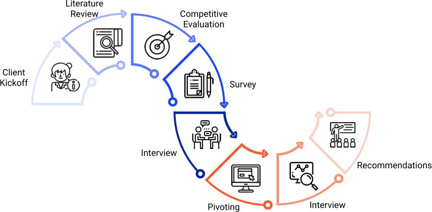
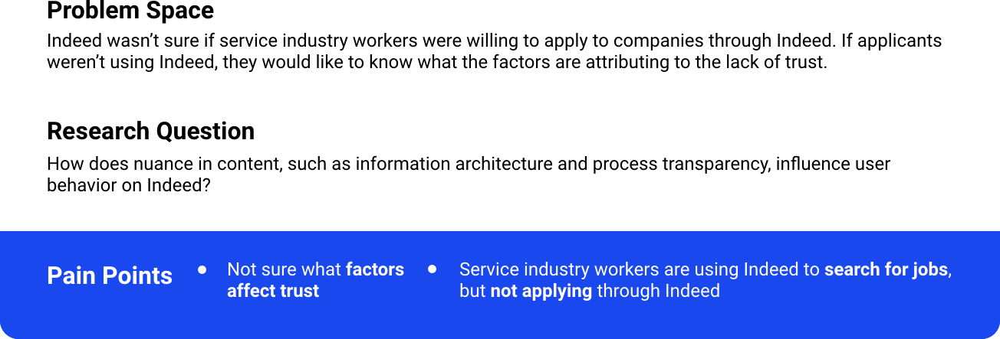
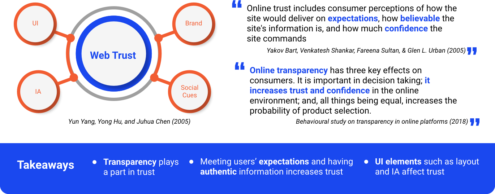
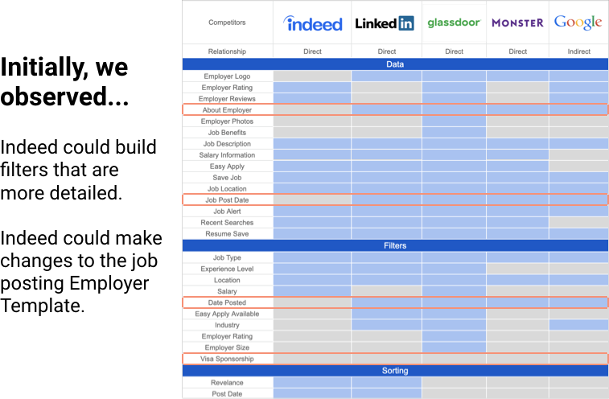
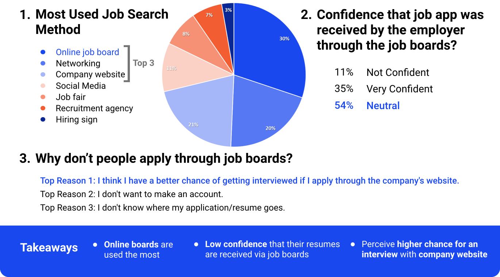
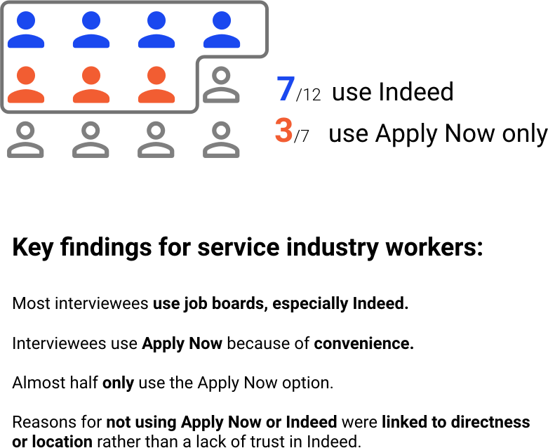
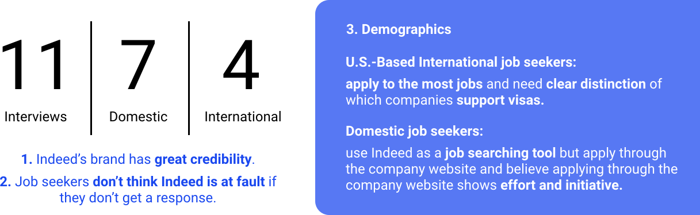
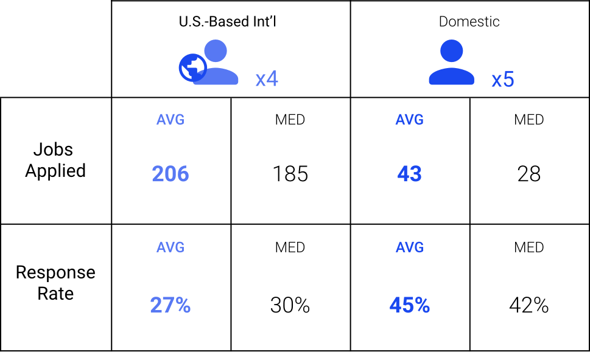
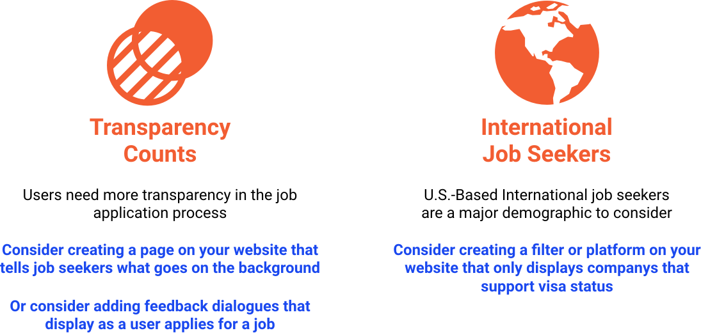

Menu
Jennifer Nwaogwugwu | UX Designer
Portfolio
Extras
About
Menu
Indeed
UX Research
What is the influence of Trust on Indeed users' job search?
View Report
Team
Yu-Kuan Hwang
Tatiana Marinkovic
Jennifer Nwaogwugwu
Junshu Shi
My Role
Interviewer
Survey Creation
Visual Designer
Methods
Literature Review
Survey
Redefinition of Research Question
The Process

1. Client Kickoff: What's the Need?

2. Literature Review: How Do We Define Trust?

3. Competitive Evaluation: When Compared to Competitors, What Can We Improve On?

4. Survey Data: What Are 30 People's Job Search Patterns?

5. First Round of Interviews: What Do Service Industry Workers Think?

6. The Pivot: How Did We Change Our Research Question?
7. Second Round of Interviews: How Do Job Seeker Demographics Differ?

8. The Spreadsheet Data: What Stands Out When We Look at Job Seekers' Job App Tracking Data?

9. Recommendations: What Are Some Next Steps?
